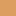
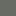
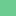
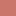
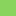

<!doctype html>
<html lang="en">
    <head>
        <meta charset="utf-8">
        <meta http-equiv="X-UA-Compatible" content="IE=edge">
        <meta name="viewport" content="initial-scale=1,user-scalable=no,maximum-scale=1,width=device-width">
        <meta name="mobile-web-app-capable" content="yes">
        <meta name="apple-mobile-web-app-capable" content="yes">
        <link rel="stylesheet" href="css/leaflet.css"><link rel="stylesheet" href="css/font-awesome.min.css"><link rel="stylesheet" href="css/L.Control.Locate.min.css">
        <link rel="stylesheet" href="css/qgis2web.css">
        <link rel="stylesheet" href="css/Control.OSMGeocoder.css">
        <link rel="stylesheet" href="css/leaflet-measure.css">
        <style>
        html, body, #map {
            width: 100%;
            height: 100%;
            padding: 0;
            margin: 0;
        }
        </style>
        <title></title>
    </head>
    <body>
        <div id="map">
        </div>
        <script src="js/qgis2web_expressions.js"></script>
        <script src="js/leaflet.js"></script><script src="js/L.Control.Locate.min.js"></script>
        <script src="js/leaflet.rotatedMarker.js"></script>
        <script src="js/leaflet.pattern.js"></script>
        <script src="js/leaflet-hash.js"></script>
        <script src="js/Autolinker.min.js"></script>
        <script src="js/rbush.min.js"></script>
        <script src="js/labelgun.min.js"></script>
        <script src="js/labels.js"></script>
        <script src="js/Control.OSMGeocoder.js"></script>
        <script src="js/leaflet-measure.js"></script>
        <script src="data/PesaUSOECOPERTURASUOLO2016_0.js"></script>
        <script>
        var highlightLayer;
        function highlightFeature(e) {
            highlightLayer = e.target;
            highlightLayer.openPopup();
        }
        var map = L.map('map', {
            zoomControl:true, maxZoom:18, minZoom:11
        }).fitBounds([[43.4604470841,10.9046898175],[43.7525068477,11.526934145]]);
        var hash = new L.Hash(map);
        map.attributionControl.addAttribution('<a href="https://github.com/tomchadwin/qgis2web" target="_blank">qgis2web</a>');
        L.control.locate().addTo(map);
        var measureControl = new L.Control.Measure({
            primaryLengthUnit: 'meters',
            secondaryLengthUnit: 'kilometers',
            primaryAreaUnit: 'sqmeters',
            secondaryAreaUnit: 'hectares'
        });
        measureControl.addTo(map);
        var bounds_group = new L.featureGroup([]);
        var basemap0 = L.tileLayer('http://{s}.tile.openstreetmap.org/{z}/{x}/{y}.png', {
            attribution: 'Accademia dei Georgofili, IBIMET CNR, Consorzio di Bonifica Medio Valdarno &copy;<a href="http://openstreetmap.org">OpenStreetMap</a> contributors,<a href="http://creativecommons.org/licenses/by-sa/2.0/">CC-BY-SA</a>',
            maxZoom: 18
        });
        basemap0.addTo(map);
        function setBounds() {
        }
        function pop_PesaUSOECOPERTURASUOLO2016_0(feature, layer) {
            layer.on({
                mouseout: function(e) {
                    if (typeof layer.closePopup == 'function') {
                        layer.closePopup();
                    } else {
                        layer.eachLayer(function(feature){
                            feature.closePopup()
                        });
                    }
                },
                mouseover: highlightFeature,
            });
            var popupContent = '<table>\
                    <tr>\
                        <th scope="row">l_2016</th>\
                        <td>' + (feature.properties['l_2016'] !== null ? Autolinker.link(String(feature.properties['l_2016'])) : '') + '</td>\
                    </tr>\
                </table>';
            layer.bindPopup(popupContent, {maxHeight: 400});
        }

        function style_PesaUSOECOPERTURASUOLO2016_0_0(feature) {
            switch(String(feature.properties['l_2016'])) {
                case 'Zone_AGR_eterogenee':
                    return {
                pane: 'pane_PesaUSOECOPERTURASUOLO2016_0',
                stroke: false, 
                fill: true,
                fillOpacity: 1,
                fillColor: 'rgba(220,158,96,0.58)',
            }
                    break;
                case 'Zone urbane':
                    return {
                pane: 'pane_PesaUSOECOPERTURASUOLO2016_0',
                stroke: false, 
                fill: true,
                fillOpacity: 1,
                fillColor: 'rgba(104,107,100,0.58)',
            }
                    break;
                case 'Zone umide':
                    return {
                pane: 'pane_PesaUSOECOPERTURASUOLO2016_0',
                stroke: false, 
                fill: true,
                fillOpacity: 1,
                fillColor: 'rgba(11,223,230,0.58)',
            }
                    break;
                case 'Vigneti':
                    return {
                pane: 'pane_PesaUSOECOPERTURASUOLO2016_0',
                stroke: false, 
                fill: true,
                fillOpacity: 1,
                fillColor: 'rgba(232,16,88,0.58)',
            }
                    break;
                case 'Vegetazione_rada':
                    return {
                pane: 'pane_PesaUSOECOPERTURASUOLO2016_0',
                stroke: false, 
                fill: true,
                fillOpacity: 1,
                fillColor: 'rgba(108,204,145,0.58)',
            }
                    break;
                case 'Seminativi':
                    return {
                pane: 'pane_PesaUSOECOPERTURASUOLO2016_0',
                stroke: false, 
                fill: true,
                fillOpacity: 1,
                fillColor: 'rgba(30,216,30,0.58)',
            }
                    break;
                case 'Prati':
                    return {
                pane: 'pane_PesaUSOECOPERTURASUOLO2016_0',
                stroke: false, 
                fill: true,
                fillOpacity: 1,
                fillColor: 'rgba(112,214,74,0.58)',
            }
                    break;
                case 'Oliveti':
                    return {
                pane: 'pane_PesaUSOECOPERTURASUOLO2016_0',
                stroke: false, 
                fill: true,
                fillOpacity: 1,
                fillColor: 'rgba(100,202,4,0.58)',
            }
                    break;
                case 'Frutteti':
                    return {
                pane: 'pane_PesaUSOECOPERTURASUOLO2016_0',
                stroke: false, 
                fill: true,
                fillOpacity: 1,
                fillColor: 'rgba(226,88,13,0.58)',
            }
                    break;
                case 'Corpi_idrici':
                    return {
                pane: 'pane_PesaUSOECOPERTURASUOLO2016_0',
                stroke: false, 
                fill: true,
                fillOpacity: 1,
                fillColor: 'rgba(165,191,221,0.58)',
            }
                    break;
                case 'Cantieri':
                    return {
                pane: 'pane_PesaUSOECOPERTURASUOLO2016_0',
                stroke: false, 
                fill: true,
                fillOpacity: 1,
                fillColor: 'rgba(202,118,107,0.58)',
            }
                    break;
                case 'Boschi':
                    return {
                pane: 'pane_PesaUSOECOPERTURASUOLO2016_0',
                stroke: false, 
                fill: true,
                fillOpacity: 1,
                fillColor: 'rgba(1,210,78,0.58)',
            }
                    break;
                case 'Aree urbane verdi':
                    return {
                pane: 'pane_PesaUSOECOPERTURASUOLO2016_0',
                stroke: false, 
                fill: true,
                fillOpacity: 1,
                fillColor: 'rgba(137,212,93,0.58)',
            }
                    break;
                case 'Aree industriali o commerciali':
                    return {
                pane: 'pane_PesaUSOECOPERTURASUOLO2016_0',
                stroke: false, 
                fill: true,
                fillOpacity: 1,
                fillColor: 'rgba(217,193,35,0.58)',
            }
                    break;
                case 'Arbusti_erbacee':
                    return {
                pane: 'pane_PesaUSOECOPERTURASUOLO2016_0',
                stroke: false, 
                fill: true,
                fillOpacity: 1,
                fillColor: 'rgba(103,209,4,0.58)',
            }
                    break;
            }
        }
        map.createPane('pane_PesaUSOECOPERTURASUOLO2016_0');
        map.getPane('pane_PesaUSOECOPERTURASUOLO2016_0').style.zIndex = 400;
        map.getPane('pane_PesaUSOECOPERTURASUOLO2016_0').style['mix-blend-mode'] = 'normal';
        var layer_PesaUSOECOPERTURASUOLO2016_0 = new L.geoJson(json_PesaUSOECOPERTURASUOLO2016_0, {
            attribution: '<a href=""></a>',
            pane: 'pane_PesaUSOECOPERTURASUOLO2016_0',
            onEachFeature: pop_PesaUSOECOPERTURASUOLO2016_0,
            style: style_PesaUSOECOPERTURASUOLO2016_0_0,
        });
        bounds_group.addLayer(layer_PesaUSOECOPERTURASUOLO2016_0);
        map.addLayer(layer_PesaUSOECOPERTURASUOLO2016_0);
        var osmGeocoder = new L.Control.OSMGeocoder({
            collapsed: false,
            position: 'topright',
            text: 'Search',
        });
        osmGeocoder.addTo(map);
        var baseMaps = {};
        L.control.layers(baseMaps,{'Pesa USO E COPERTURA SUOLO 2016<br /><table><tr><td style="text-align: center;"></td><td>Zone_Agricole_eterogenee</td></tr><tr><td style="text-align: center;"></td><td>Zone urbane</td></tr><tr><td style="text-align: center;"></td><td>Zone umide</td></tr><tr><td style="text-align: center;"></td><td>Vigneti</td></tr><tr><td style="text-align: center;"></td><td>Vegetazione_rada</td></tr><tr><td style="text-align: center;"></td><td>Seminativi</td></tr><tr><td style="text-align: center;"></td><td>Prati</td></tr><tr><td style="text-align: center;"></td><td>Oliveti</td></tr><tr><td style="text-align: center;"></td><td>Frutteti</td></tr><tr><td style="text-align: center;"></td><td>Corpi_idrici</td></tr><tr><td style="text-align: center;"></td><td>Cantieri</td></tr><tr><td style="text-align: center;"></td><td>Boschi</td></tr><tr><td style="text-align: center;"></td><td>Aree urbane verdi</td></tr><tr><td style="text-align: center;"></td><td>Aree industriali o commerciali</td></tr><tr><td style="text-align: center;"></td><td>Arbusti_erbacee</td></tr></table>': layer_PesaUSOECOPERTURASUOLO2016_0,},{collapsed:false}).addTo(map);
        setBounds();
        </script>
    </body>
</html>
